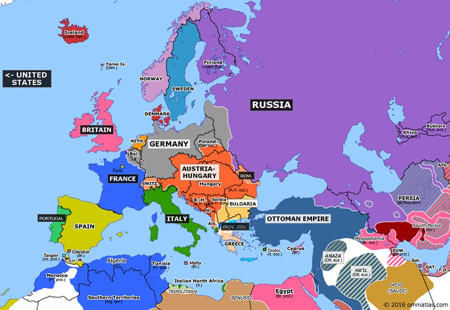

ASV piedalīšanās Pirmajā pasaules karā - ASV pievienojās karam 1917. gada aprīlī pēc Vācijas bezierunu zemūdeņu kara uzsākšanas.
Krievijas revolūcija - 1917. gada februārī notika Februāra revolūcija, kas beidza cara Nikolaja II valdīšanu, un oktobrī Bolševiki, vadīti no Vladimira Ļeņina, pārņēma varu.
Balfūra deklarācija - 1917. gada 2. novembrī Lielbritānija atbalstīja ebreju valsts izveidi Palestīnā.
Pasčendeles kauja - Asiņaina un iznīcinoša kauja, kas norisinājās no jūlija līdz novembrim.
Krievijas sabrukums: Februāra revolūcija noveda pie cara Nikolaja II abdikācijas un Krievijas vājināšanās.
Brest-Litovskas miera līgums: Krievija izstājās no kara, noslēdzot miera līgumu ar Vāciju.
Vācu uzbrukumi: Vācija ieguva teritorijas Krievijā, Polijā un Baltijā
Tanku izmantošana - pirmie britu Mark IV tanki tika izmantoti Pirmajā pasaules karā.
Sten pistole - izstrādāts pirmais ierocis, kas kļuva nozīmīgs Otrajā pasaules karā.
Pneimatiskās riepas - kļuva plaši izmantotas transportā.
Radar - tika veikti pirmie eksperimenti, kas vēlāk noveda pie radara izgudrošanas.
 Vairāk Informācijas